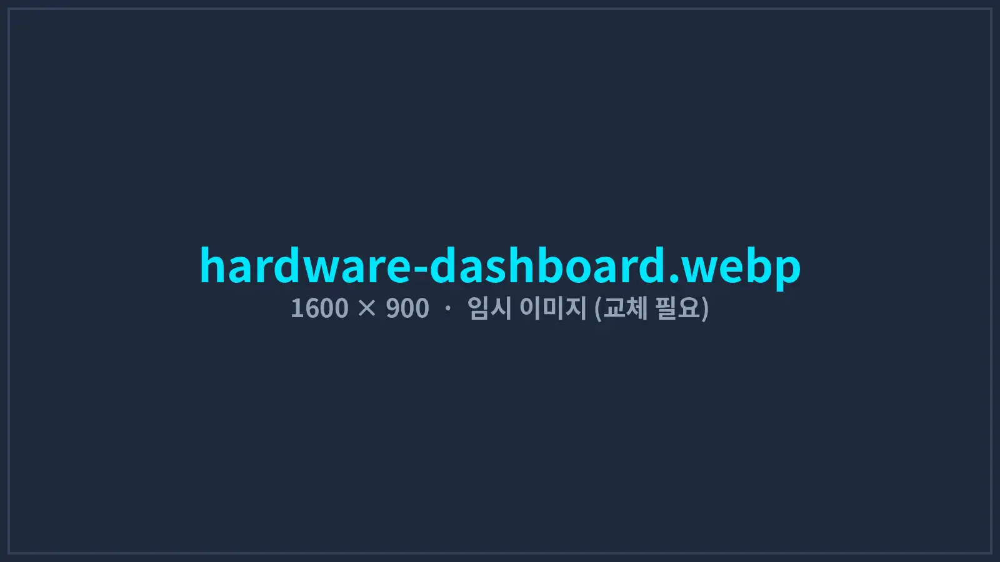
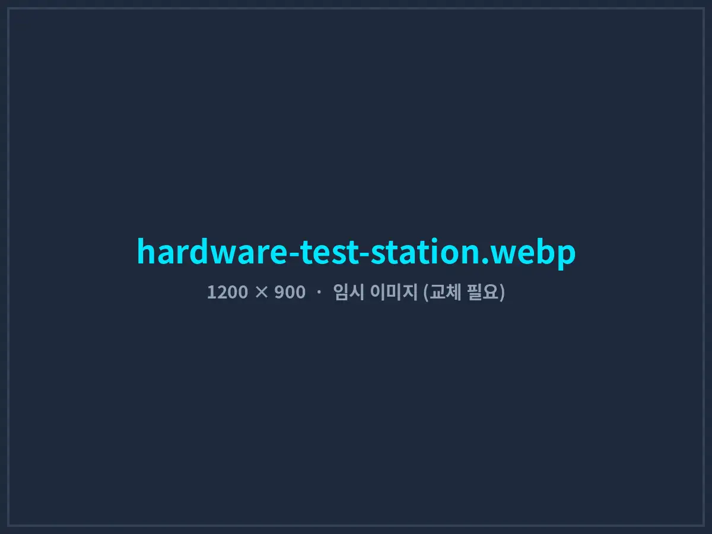
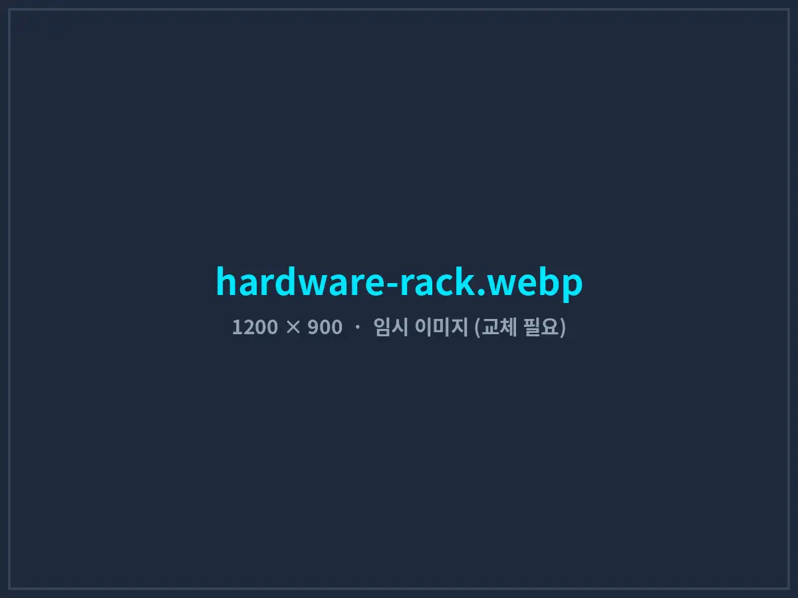

음향기기 ODM 생산라인, 7종 계측 장비를 하나의 검사 프로그램으로
장비마다 따로 켜던 프로그램 3~4개와 종이 체크시트를 없앴습니다. 바코드 한 번 스캔으로 전원 인가, 음향 측정, 블루투스 검사, 판정, 라벨 출력까지 자동으로 진행되고 모든 측정값이 시리얼 번호별로 저장됩니다.
- 고객사
- B사 (음향기기 ODM 제조사)
- 생산 품목
- 블루투스 스피커 · 사운드바
- 구축 기간
- 2025.02 – 2025.05 (14주)
- 적용 범위
- 출하 검사(EOL) 라인 4개
- 연동 장비
- 7종 · 라인당 11대
- 개발 환경
- C# .NET 8 · PostgreSQL

01도입 배경: 장비는 좋은데, 연결이 안 되어 있었다
B사는 한국 브랜드사의 블루투스 스피커와 사운드바를 주문자 개발 생산(ODM) 방식으로 만드는 제조사입니다. 중국 광둥성 공장에서 출하 검사 라인 4개를 운영하며, 제품 1대마다 소비 전류, 주파수 응답, 왜곡률(THD), 잡음(Rub & Buzz), 블루투스 연결 상태를 검사합니다.
측정 장비 자체는 충분히 정밀했지만 장비마다 전용 프로그램이 따로 있었습니다. 작업자는 제품 1대를 검사할 때마다 화면 3~4개를 번갈아 조작하고, 결과를 종이 체크시트에 적은 뒤 교대 종료 후 엑셀로 옮겼습니다. 한국 고객사가 품질 클레임과 함께 “해당 시리얼 번호의 출하 검사 데이터를 제출해 달라”고 요청하면, 종이 기록을 뒤져 찾는 데 반나절이 걸렸습니다.
- 검사 속도 병목프로그램 전환과 수기 기록 때문에 1대당 검사 시간이 52초로, 조립 공정보다 느려 라인 끝에 재공품이 쌓였습니다.
- 작업자 판정 오류합격 기준을 사람이 눈으로 비교하다 보니 경계값 제품의 판정이 작업자마다 달랐습니다. (월 평균 14건 확인)
- 데이터 추적 불가측정값이 저장되지 않고 합격·불합격만 기록되어, 불량 원인 분석과 고객사 대응이 어려웠습니다.
- 언어 장벽장비 프로그램이 영어로만 되어 있어 현지 작업자 교육에 시간이 오래 걸렸습니다.
02연동 장비 구성
기존 장비는 교체하지 않고 그대로 사용했습니다. 각 장비의 통신 방식에 맞는 드라이버를 개발해 하나의 공통 인터페이스로 묶었습니다.
| 장비 | 검사 항목 / 역할 | 통신 방식 |
|---|---|---|
| 오디오 분석기 | 주파수 응답, THD, 감도, Rub & Buzz | LAN · SCPI (VISA) |
| 프로그래머블 DC 전원공급기 | 전원 인가, 대기·동작 소비 전류 측정 | RS-232 |
| 블루투스 테스트 모듈 | 페어링, 신호 세기(RSSI), 펌웨어 버전 확인 | USB 시리얼 · AT 커맨드 |
| PLC (지그 제어) | 지그 클램프, 무향 박스 도어, 양품·불량 배출 | Ethernet · MC Protocol |
| 바코드 스캐너 | 제품 시리얼 번호 입력 → 검사 시작 트리거 | USB 시리얼 |
| 라벨 프린터 | 합격 제품 시리얼·검사일 라벨 출력 | TCP 9100 · ZPL |
| 온습도 로거 | 검사 환경 조건 기록 (측정 신뢰성 확보) | RS-485 · Modbus RTU |
03시스템 구조
장비 드라이버, 검사 시퀀스, 판정·기록, 관제 화면을 분리해 설계했습니다. 신모델이 들어오면 코드를 고치지 않고 검사 레시피(측정 순서와 합격 기준)만 추가하면 됩니다.
- INPUT바코드 스캔 · 모델 레시피 자동 선택
- SEQUENCE전원 인가 → 음향 측정 → BT 검사
- JUDGE기준값 자동 판정
- RECORD로컬 저장 → 서버 DB 동기화
- OUTPUT라벨 출력 · 양품/불량 배출
장비 공통 드라이버 계층
모든 장비를 ‘연결·측정·해제’ 공통 인터페이스로 감쌌습니다. 장비 모델이 바뀌어도 드라이버만 교체하면 검사 로직은 그대로 동작합니다.
병렬 측정으로 시간 단축
전원 안정화를 기다리는 동안 블루투스 페어링을 동시에 진행하는 등 서로 독립적인 측정을 병렬로 처리해 대기 시간을 줄였습니다.
모델별 검사 레시피 편집기
엔지니어 권한으로 측정 순서, 주파수 대역, 합격 상·하한값을 화면에서 수정합니다. 변경 이력은 누가, 언제, 무엇을 바꿨는지 모두 남습니다.
통신 장애 자동 복구
장비 응답이 없으면 자동 재연결을 3회 시도하고, 실패 시 해당 장비를 화면에 빨간색으로 표시해 작업자가 즉시 알 수 있게 했습니다.
끊김 없는 데이터 기록
측정값은 먼저 라인 PC의 로컬 DB(SQLite)에 저장한 뒤 서버(PostgreSQL)로 동기화합니다. 공장 네트워크가 끊겨도 데이터가 유실되지 않습니다.
중국어 · 한국어 화면
작업자 화면은 중국어, 관리자 화면과 리포트는 한국어로 표시합니다. 버튼 수를 최소화해 신규 작업자도 30분 교육으로 검사를 시작할 수 있습니다.



04구축 과정
- 1–3주차
현장 조사 · 장비 통신 검증
현지 공장에서 라인별 작업 동선을 촬영하고, 7종 장비의 통신 명령과 응답 시간을 전부 측정했습니다. 오디오 분석기 측정 1회에 약 6.8초가 걸린다는 점을 확인하고 병렬 처리 설계에 반영했습니다.
- 4–8주차
드라이버 · 시퀀스 엔진 개발
사무실 테스트 벤치에 동일 장비를 구성해 드라이버와 검사 시퀀스를 개발했습니다. 기존 수기 기록 3,000건과 비교해 판정 결과가 일치하는지 검증했습니다.
- 9–11주차
1개 라인 파일럿 · 기존 방식과 병행
1번 라인에서 2주간 기존 방식과 신규 시스템을 병행 운영하며 판정 차이를 비교했습니다. 경계값 판정 기준 2건을 품질팀과 협의해 조정했습니다.
- 12–14주차
4개 라인 확대 · 교육 · 리포트
나머지 3개 라인에 설치하고, 조장·작업자 교육과 고객사 제출용 시리얼별 검사 성적서 양식을 완성했습니다.
05도입 성과
도입 전 4주와 4개 라인 전면 적용 후 4주를 비교했습니다. (동일 모델 3종 기준)
검사 공정이 더 이상 병목이 아니게 되면서 라인 끝 재공품이 사라졌고, 검사 인원을 늘리지 않고도 성수기 증산 물량을 소화했습니다. 무엇보다 모든 제품의 측정값이 남기 때문에 고객사 품질 문의에 시리얼 번호만으로 즉시 성적서를 제출할 수 있게 됐습니다.
누적된 측정 데이터로 뜻밖의 개선점도 찾았습니다. 특정 스피커 유닛 입고 로트에서 저음역 감도가 기준 하한에 몰려 있는 경향을 발견해, 협력사 입고 검사 기준을 조정하도록 요청했습니다.
06자주 묻는 질문
기존 장비를 바꾸지 않고도 연동할 수 있나요?
대부분 가능합니다. RS-232/485, USB, LAN(SCPI, Modbus TCP), PLC 전용 프로토콜 등 통신 포트가 있는 장비라면 드라이버를 개발해 연동합니다. 통신 매뉴얼이 없는 장비는 현장에서 통신 내용을 분석해 확인합니다.
해외 공장에도 설치와 지원이 가능한가요?
네. 중국 현지 공장 구축 경험이 있으며, 초기 설치와 파일럿은 현장에서 진행하고 이후 유지보수는 원격 접속으로 지원합니다. 작업자 화면은 중국어, 영어, 한국어를 지원합니다.
MES나 ERP와 연동할 수 있나요?
검사 결과를 DB 뷰, CSV 파일, REST API 중 기존 시스템이 받을 수 있는 방식으로 제공합니다. 작업 지시를 MES에서 받아오는 양방향 연동도 가능합니다.
신모델이 추가될 때마다 개발 비용이 드나요?
측정 항목이 기존 장비 범위 안이라면 고객사 엔지니어가 레시피 편집기에서 직접 추가할 수 있어 별도 비용이 들지 않습니다. 새로운 장비를 추가할 때만 드라이버 개발이 필요합니다.
흩어진 장비, 하나로 연결해 드립니다
사용 중인 장비 목록만 보내주셔도 연동 가능 여부를 먼저 확인해 드립니다.